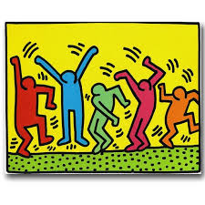
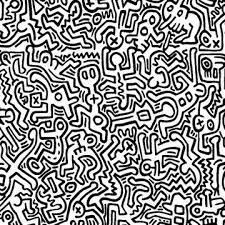
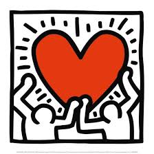
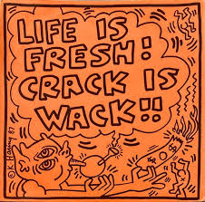

Artistic Style
Haring's artistic style was considered pop art and graffiti. His works consisted of simple cartoon imagery coupled with vibrant colors and clean lines. Through his distinct style, his imagery became "a widely recognized visual language" that filled the streets of New York City. His classic figures soon became icons that shaped the art and culture of Haring's time. Haring often created murals filled to the brim with people, shapes, animals, and objects all in his distinct graffiti style.



